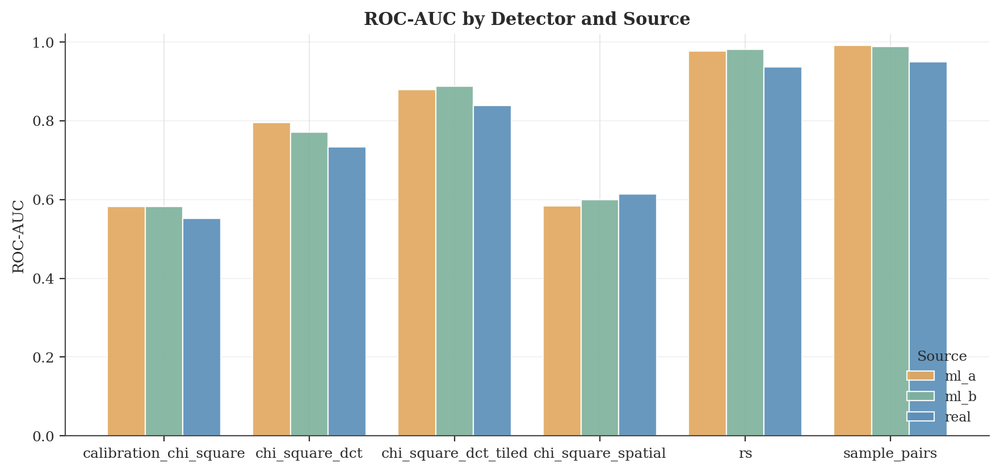

Can detection tools built for real photos still catch hidden data in AI-generated images?
Steganography hides secret data inside ordinary-looking images. The tools that detect it — steganalysis — were all built and validated on real photographs.
But today, a huge share of images online aren't real — they're generated by AI models like Stable Diffusion and FLUX. Nobody had systematically tested whether existing detection tools still work when the carrier is an AI-generated image. That's the gap we set out to close.
Yes — the carrier source changes detectability.
Across five detectors and 36,000 hidden-data images, AI-generated carriers were generally easier to detect than real photos — though the direction depends on the detector.
The likely reason: AI images lack the natural sensor noise real cameras produce. Hidden bits normally hide inside that noise — without it, they stand out.
Detection accuracy by carrier source

What the data shows
Carrier source matters
4 of 5 detectors found AI-generated images easier to attack than real photos.
It depends on the detector
One spatial detector flipped the other way — the effect isn't uniform.
Embedding stays invisible
All stego images passed the visual-quality floor (PSNR > 50 dB, SSIM ≥ 0.998).
Encryption is invisible
AES-encrypting the payload had no detectable effect on any detector.
Detection tools can't be blindly trusted across image sources.
A steganalysis tool calibrated on real photographs behaves differently on AI-generated content. As AI images flood the internet, this has a counter-intuitive implication: AI carriers may be a weakness, not a strength, for hidden communication.
We deliver these conclusions through a fully reproducible, open-source pipeline — so anyone can re-run the experiments and verify the results.
A five-stage steganalysis pipeline
- Carriers: 1,000 caption-matched groups — real photos (COCO/Flickr30k), SDXL, and FLUX.
- Embedding: hide data via spatial LSB (PNG) and frequency DCT-LSB (JPEG), plain and AES-encrypted.
- Detection: five training-free detectors score every image for hidden data.
- Analysis: compare detection accuracy across sources with paired statistical tests.
- Verdicts: aggregate into research-question conclusions and figures.